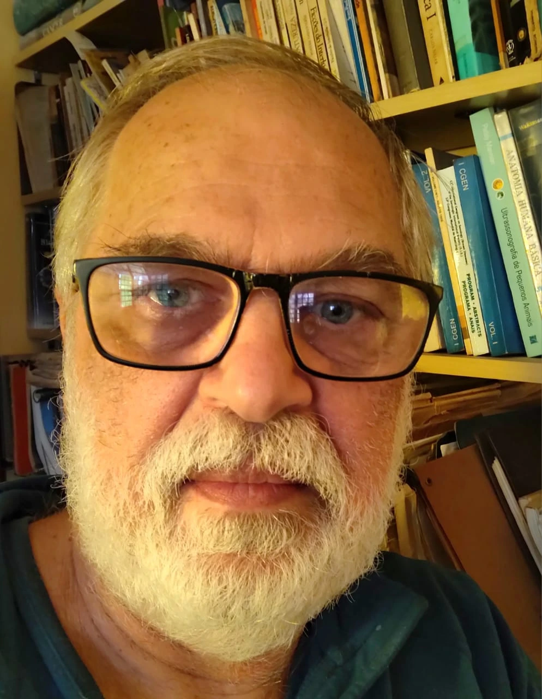

The International Symposium on Solid State Dosimetry (ISSSD) is proud to honor outstanding contributions in the field of radiation science and its applications in medicine, industry, and research. The 2025 Awards recognize excellence, innovation, and leadership that have advanced knowledge, safety, and education in nuclear science.

We are honored to recognize the exceptional contributions of Prof. Tarcísio Passos Ribeiro de Campos, a distinguished figure in nuclear engineering and radiation science in Brazil. With a career spanning over four decades, Prof. Campos has significantly advanced the fields of medical dosimetry, radiation protection, and nuclear technology.
As a retired full professor at the Federal University of Minas Gerais (UFMG), he continues to collaborate with the university and the Nuclear Technology Development Center (CDTN). Prof. Campos earned his undergraduate degree in Engineering from UFMG (1983), a master’s in Nuclear Engineering from the Federal University of Rio de Janeiro (1985) with a focus on Reactor Physics and Nuclear Resonances, and a Ph.D. in Nuclear Engineering from the University of Illinois at Urbana-Champaign (UIUC, USA, 1993). At UIUC, he conducted research at the Beckman Institute in neuroscience, robotics, and visuo-motor coordination. He completed a postdoctoral fellowship at the Massachusetts Institute of Technology (MIT, USA, 1998) under the MIT-Harvard research program as a Fulbright Fellow, focusing on Boron Neutron Capture Therapy (BNCT) for brain tumors.
Prof. Campos has extensive experience across multiple areas of Engineering and Nuclear Energy, with current emphasis on materials, radiation science, radioisotopes, radiochemistry, and radiobiology. His research spans radioactive biomaterials, ionizing radiation effects, radiotherapy, brachytherapy, experimental and computational dosimetry, radiopharmaceutical production, development of physical radiology simulators, radiotherapy software, neutron capture therapy, radiobiology, radiochemistry, oncology, nuclear instrumentation, automation, and the design of particle accelerators, isotope transmuters, radioisotope generators, and nuclear reactor cores.